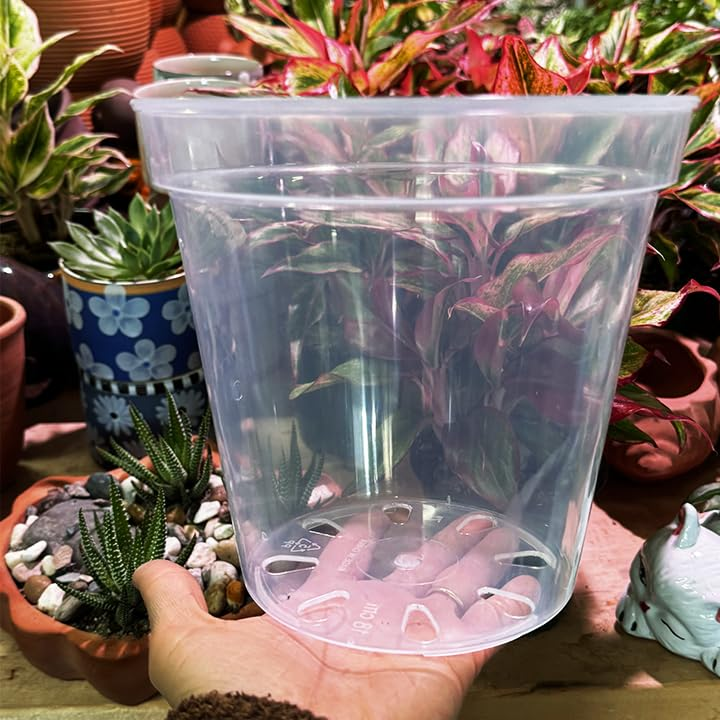

Step-by-Step Guide to Planting
Follow these simple steps to plant your seeds with ease.
Step 1: Prepare the Pot
Make sure the pot has good drainage and add a layer of rocks at the bottom.
Step 2: Add Soil

Fill the pot with the right type of soil suitable for your plant. Make sure the soil is well-draining to prevent root rot.
Step 3: Plant the Seed

Place your seed or plant cutting in the soil, ensuring it's at the right depth.
Step 4: Water and Care

Water gently and place your plant in an area with appropriate sunlight.